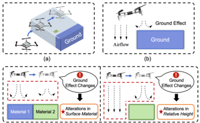
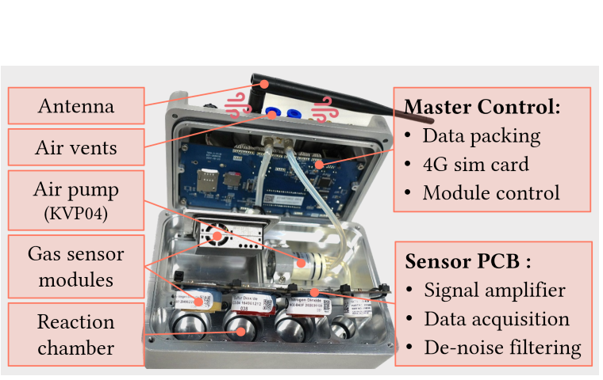
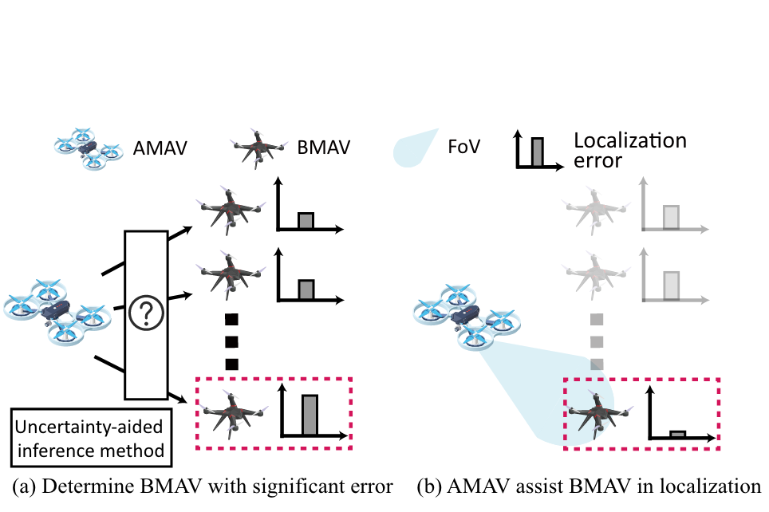
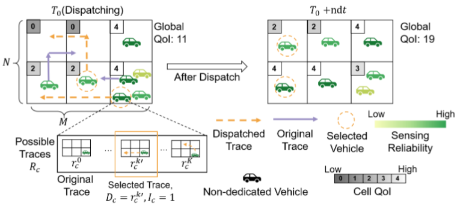
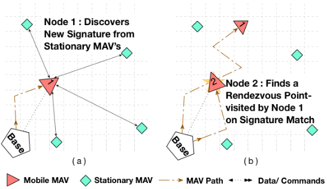

|
Xinlei Chen | 陈鑫磊
I am currently a Associate Professor with the Tsinghua University SIGS. I received my Ph.D. degree from Carnegie Mellon University under the supervision of Prof. Pei Zhang.
I am committed to using multi-agent collaborative strategies to solve real problems in smart cities and industries on a city-level large-scale AIoT platform.
Research interests: Cyber Physical System, Artificial Internet of Things, Multi-agent System, Ubiquitous Computing, Mobile Computing, Smart Sensing, Wireless Communication and Network.
Email /
Google Scholar /
CV (2024.10.28)
|
|
|
News
- [2024.10] Our work AirTouch received all four badges from ACM Artifact Evaluation!
- [2024.06] Our work DDL is accepted by IEEE JSTSP! Congrats to Xuecheng!
- [2024.06] Our work AirTouch is conditionally accepted by ACM MobiCom 2024! Congrats to Chenyu!
- [2024.04] Our work SOScheduler is accepted by IEEE IOT-J! Congrats to Xuecheng!
- [2024.03] Our work MobiAir is accepted by ACM MobiSys 2024! (Acceptance ratio: 16.3%)! Congrats to Yuxuan!
- [2023.12] Our work TransformLoc is accepted by IEEE INFOCOM 2024! (Acceptance rate: 19.5%)! Congrats to Haoyang!
|
Selected Publications (*: Co-primary authors; †: Corresponding author)
|

|
Foes or Friends: Embracing Ground Effect for Edge Detection on Lightweight Drones
Chenyu Zhao*, Ciyu Ruan*, Jingao Xu†, Haoyang Wang, Shengbo Wang, Jirong Zha, Jiaqi Li, Zheng Yang, Yunhao Liu, Xiao-Ping Zhang, Xinlei Chen†
[ACM MobiCom 2024] In the ACM 30th Annual International Conference On Mobile Computing And Networking. Conditionally accepted!
|
|

|
MobiAir: Unleashing Sensor Mobility for City-scale and Fine-grained Air-Quality Monitoring with AirBERT
Yuxuan Liu*, Haoyang Wang*, Fanhang Man, Jingao Xu, Fan Dang, Yunhao Liu, Xiao-Ping Zhang, Xinlei Chen†
[ACM MobiSys 2024] In the 22nd ACM International Conference on Mobile Systems, Applications, and Services (Acceptance ratio: 43/263 = 16.3%)
|
|

|
TransformLoc: Transforming MAVs into Mobile Localization Infrastructures in Heterogeneous Swarms
Haoyang Wang, Jingao Xu, Chenyu Zhao, Zihong Lu, Yuhan Cheng, Xuecheng Chen, Xiao-Ping Zhang, Yunhao Liu, Xinlei Chen†
[IEEE INFOCOM 2024] In the IEEE International Conference on Computer Communications 2024 (Acceptance ratio: 256/1307=19.5%)
|
|

|
QUEST: Quality-informed Multi-agent Dispatching System for Optimal Mobile Crowdsensing
Zuxin Li, Fanhang Man, Xuecheng Chen, Susu Xu, Fan Dang, Xiao-Ping Zhang, Xinlei Chen†
[IEEE INFOCOM 2024] In the IEEE International Conference on Computer Communications 2024 (Acceptance ratio: 256/1307=19.5%)
|
|

|
DrunkWalk: Collaborative and Adaptive Planning for Navigation of Micro-Aerial Sensor Swarms
Xinlei Chen, Aveek Purohit, Carlos Ruiz Dominguez, Stefano Carpin, Pei Zhang*
[ACM SenSys 2015] The 13th ACM Conference on Embedded Networked Sensor Systems (SenSys 2015)
|
Other Publications (*: Co-primary authors; †: Corresponding author)
For all publications, please refer to Google Scholar for the most updated list.
- BlueKey: Exploiting Bluetooth Low Energy for Enhanced Physical-Layer Key Generation
Yawen Zheng, Fan Dang, Zihao Yang, Jinyan Jiang, Xu Wang, Lin Wang, Kebin Liu, Xinlei Chen, Yunhao Liu
[IEEE INFOCOM 2024] In the IEEE International Conference on Computer Communications 2024 (Acceptance ratio: 256/1307=19.5%)
- StreamingTag: A scalable piracy tracking solution for mobile streaming services
Xinqi Jin, Fan Dang, Qi-An Fu, Lingkun Li, Guanyan Peng, Xinlei Chen, Kebin Liu, Yunhao Liu
[ACM MobiCom 2022] Proceedings of the 28th Annual International Conference on Mobile Computing And Networking.
- LSync: A universal event-synchronizing solution for live streaming
Yifan Xu, Fan Dang, Rongwu Xu, Xinlei Chen, Yunhao Liu
[IEEE INFOCOM 2022] IEEE INFOCOM 2022-IEEE Conference on Computer Communications.
- DDL: Empowering Delivery Drones With Large-Scale Urban Sensing Capability
Xuecheng Chen*, Haoyang Wang*, Yuhan Cheng, Haohao Fu, Yuxuan Liu, Fan Dang, Yunhao Liu, Jinqiang Cui, Xinlei Chen†
[IEEE J-STSP] IEEE Journal of Selected Topics in Signal Processing, 2024.
- SOScheduler: Toward Proactive and Adaptive Wildfire Suppression via Multi-UAV Collaborative Scheduling
Xuecheng Chen, Zijian Xiao, Yuhan Cheng, ChenChun Hsia, Haoyang Wang, Jingao Xu, Susu Xu, Fan Dang, Xiao-Ping Zhang, Yunhao Liu, Xinlei Chen†
[IEEE IOT-J] IEEE Internet of Things Journal
- BEANet: An Energy-efficient BLE Solution for High-capacity Equipment Area Network
Yifan Xu, Fan Dang, Kebin Liu, Zhui Zhu, Xinlei Chen, Xu Wang, Xin Miao, Haitian Zhao
[ACM TOSN] ACM Transactions on Sensor Networks, 2024.
- LSync: A Universal Timeline-Synchronizing Solution for Live Streaming
Fan Dang, Yifan Xu, Rongwu Xu, Xinlei Chen, Yunhao Liu
[IEEE TON] IEEE/ACM Transactions on Networking, 2024.
- DeliverSense: Efficient Delivery Drone Scheduling for Crowdsensing with Deep Reinforcement Learning
Xuecheng Chen, Haoyang Wang, Zuxin Li, Wenbo Ding, Fan Dang, Chengye Wu, Xinlei Chen†
Best Paper Award (1 out of all submissions)
[ACM Ubicomp CPD 2022] In the ACM International Joint Conference on Pervasive and Ubiquitous Computing CPD Workshop 2022
- A wearable low-power collaborative sensing system for high-quality SSVEP-BCI signal acquisition
Rui Na, Dezhi Zheng, Ying Sun, Mingzhe Han, Shuai Wang, Shuailei Zhang, Qianxin Hui, Xinlei Chen†, Jun Zhang, Chun Hu
[IEEE IoT-J] IEEE Internet of Things Journal, 2021.
- Ultralow-power sensing framework for internet of things: A smart gas meter as a case
Ziteng Wang, Chun Hu, Dezhi Zheng, Xinlei Chen†
[IEEE IoT-J] IEEE Internet of Things Journal, 2021.
- Adaptive hybrid model-enabled sensing system (HMSS) for mobile fine-grained air pollution estimation
Xinlei Chen, Susu Xu, Xinyu Liu, Xiangxiang Xu, Hae Young Noh, Lin Zhang, Pei Zhang
[IEEE TMC] IEEE Transactions on Mobile Computing, 2020.
- H-DrunkWalk: Collaborative and adaptive navigation for heterogeneous MAV swarm
Xinlei Chen, Carlos Ruiz, Sihan Zeng, Liyao Gao, Aveek Purohit, Stefano Carpin, Pei Zhang
[ACM TOSN] ACM Transactions on Sensor Networks (TOSN), 2020.
- Pas: Prediction-based actuation system for city-scale ridesharing vehicular mobile crowdsensing
Xinlei Chen, Susu Xu, Jun Han, Haohao Fu, Xidong Pi, Carlee Joe-Wong, Yong Li, Lin Zhang, Hae Young Noh, Pei Zhang
[IEEE IoT-J] IEEE Internet of Things Journal, 2020.
- ilocus: Incentivizing vehicle mobility to optimize sensing distribution in crowd sensing
Susu Xu*, Xinlei Chen*, Xidong Pi, Carlee Joe-Wong, Pei Zhang, Hae Young Noh
[IEEE TMC] IEEE Transactions on Mobile Computing, 2019.
- Design experiences in minimalistic flying sensor node platform through sensorfly
Xinlei Chen, Aveek Purohit, Shijia Pan, Carlos Ruiz, Jun Han, Zheng Sun, Frank Mokaya, Patric Tague, Pei Zhang
[ACM TOSN] ACM Transactions on Sensor Networks (TOSN), 2017.
Selected Awards
- [2023] Best Paper Award, ACM UbiComp CPD Workshop.
- [2022] National Overseas Early Career Award, National Science Foundation of China.
- [2017] Best Poster Award, ACM/IEEE International Conference on Information Processing in Sensor Networks (IPSN).
- [2016] Best Demo Award, ACM Conference on Embedded Networked Sensor Systems (SenSys).
- [2016] Best Poster Runner Up Award, ACM Conference on Embedded Networked Sensor Systems (SenSys).
- [2013] Dean Fellowship, Carnegie Mellon University.
- [2012] Excellent Master Thesis Award, Tsinghua University.
Professional Activities
- TPC Member, The 11th ACM International Conference on Systems for Energy-Efficient Buildings, Cities, and Transportation, 2024
- TPC Member, The 25th International Workshop on Mobile Computing Systems and Applications, 2024
- TPC Member, The 19th International Conference on Mobility, Sensing and Networking, 2023
- Leading Guest Editor, Sensors (Special Issue: New Trends in Artificial Intelligence of Things), 2023
- Leading Guest Editor, Applied Sciences (Special Issue: Information Fusion and Its Applications for Smart Sensing), 2023
- General Chair, The 4th TBSI Workshop on Learning Theory, 2022
- TPC Member, The 27th IEEE International Conference on Parallel and Distributed Systems, 2021
- TPC Co-Chair of CPD Workshop, The 23th ACM International Joint Conference on Pervasive and Ubiquitous Computing, 2021
- Competition Co-chair, Cyber-Physical Systems and Internet-of-Things Week, 2020
- TPC Co-Chair of CPD Workshop, The 22th ACM International Joint Conference on Pervasive and Ubiquitous Computing, 2020
- TPC Member, The 29th International Joint Conference on Artificial Intelligence, 2020
- TPC Co-Chair of CPD Workshop, The 21th ACM International Joint Conference on Pervasive and Ubiquitous Computing, 2019
- TPC Member, The 28th International Joint Conference on Artificial Intelligence, 2019
- TPC Member, The 33rd AAAI Conference on Artificial Intelligence, 2019
- TPC Co-Chair of CPD Workshop, The 20th ACM International Joint Conference on Pervasive and Ubiquitous Computing, 2018
- Web Chair, The 16th ACM Conference on Embedded Networked Sensor Systems, 2018
- Web Chair, The 5th ACM International Conference on Systems for Energy-Efficient Built Environments, 2018
Teaching Experience
Instructor
- Introduction to AIoT, 2023 Fall, Tsinghua University
- Data Visualization, 2022 Spring, 2023 Spring, 2024 Spring, Tsinghua University
- Urban low altitude messenger, 2024 Spring, Tsinghua University
- Data Mining: Theory & Algorithms, 2022 Fall, Tsinghua University
|
{kind=link}